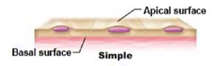
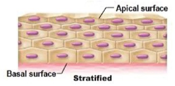
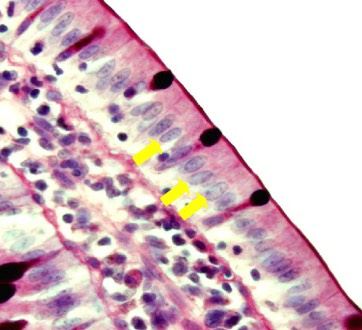
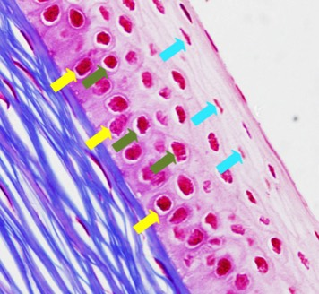

Bepaal het aantal cellagen:
D) Bekijk nu het epitheel. Het bevindt zich tussen de basaalmembraan en de buitenwereld. Een rij van cellen die evenwijdig loopt met de basaalmembraan noem je een cellaag. Omdat cellen kernen bevatten, zullen ook de kernen netjes naast elkaar zitten. Liggen de cellen (en dus de kernen) in één laag, dan heb je een éénlagig epitheel. Zie je kernen liggen op meerdere niveaus, dan heb je een meerlagig of pseudomeerlagig epitheel. Kijk of de celkernen in één laag of op meerdere niveaus zitten.
E) Bij kernen op meerdere niveaus kan je een onderscheid maken tussen een meerlagig epitheel of een pseudomeerlagig epitheel. Bij meerlagige epithelen maken de bovenste cellagen geen contact met de basaalmembraan. Bij pseudomeerlagige epithelen maken alle cellen contact met de basale membraan, maar zijn ze niet allemaal even hoog. Bij pseudomeerlagige epithelen vinden we basale vervangcellen terug. (Tip: bekijk dit eens functioneel; basale vervangcellen zitten in organen die onderhevig zijn aan beschadiging, maar waar geen andere mogelijkheden zijn om de progenitorcellen te beschermen dan deze weg te houden van het lumen; denk maar aan de luchtpijp). Oordeel of je een meerlagig of pseudomeerlagig epitheel hebt.



De kernen van de meeste cellen liggen in 1 laag. Dit betekent dat we een éénlagig epitheel hebben.

De kernen liggen op meerdere niveaus. De cellen waarvan de kernen met de groene en blauwe pijlen zijn aangeduid, raken de basaalmembraan niet. Dit betekent dat we een meerlagig epitheel hebben.
Vordering zelfstudie bedekkende epithelen: